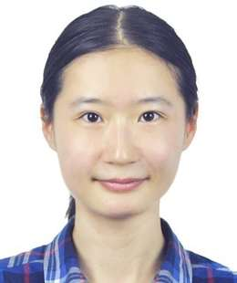

Erwu Liu
Professor · Director
Wireless communications / IoT · localization & sensing · AI & blockchain
Professor at Tongji University and IET Fellow, working on communications, localization, sensing and trusted intelligence.
Profile →A multidisciplinary team spanning communications, localization, sensing, AI, computational mathematics and trusted collaboration.
Wireless communications / IoT · localization & sensing · AI & blockchain
Professor at Tongji University and IET Fellow, working on communications, localization, sensing and trusted intelligence.
Profile →Wireless communications · machine learning · signal processing
Research interests include federated learning, reinforcement learning, ISAC, intelligent signal processing and reconfigurable intelligent surfaces.
Profile →
6G · foundation models for communications · agent communications · ISAC
Former Bell Labs research scientist and department director, with long-term work on 6G architectures, foundation models for communications, localization and ISAC.
Profile →Computational mathematics · data science · AI for Engineering
Research areas include reduced-order computational mechanics, data-driven models, AI for Engineering, computational mechanics and CFD.
Profile →
Machine learning · integrated sensing, communication & computing · space-air-ground networks
Research interests include machine learning and optimization, with applications in wireless communications, integrated sensing, communication & computing and space-air-ground networks.
Profile →IoT communications · random access · machine learning
Research interests include IoT communications, ultra-reliable low-latency communications, random access and machine learning.
Profile →